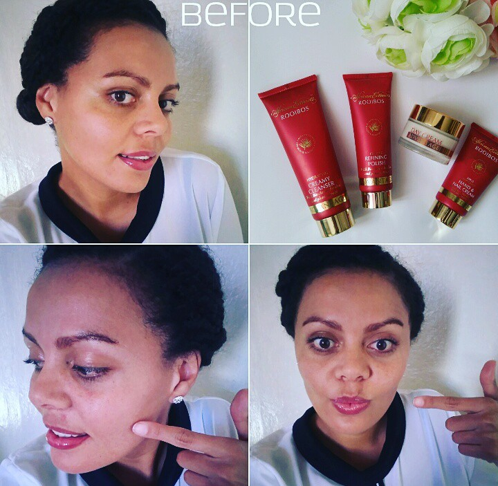
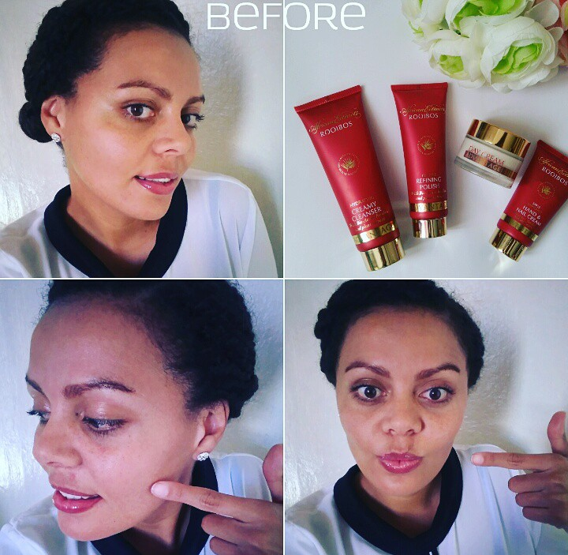
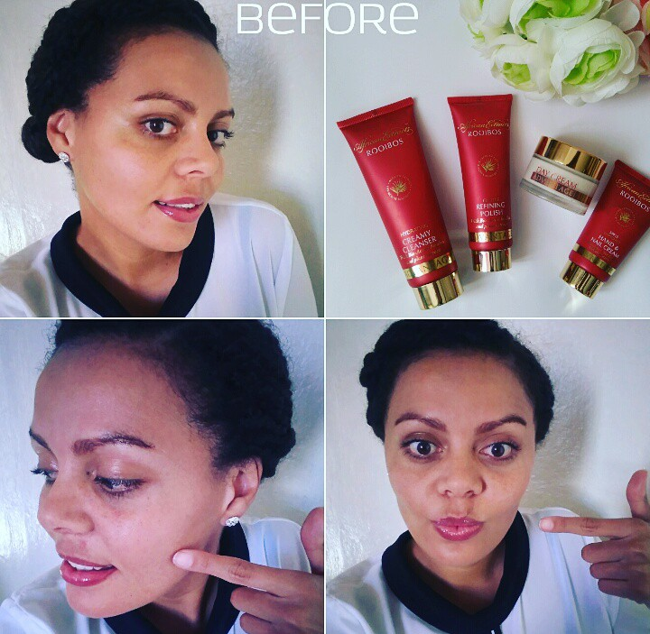
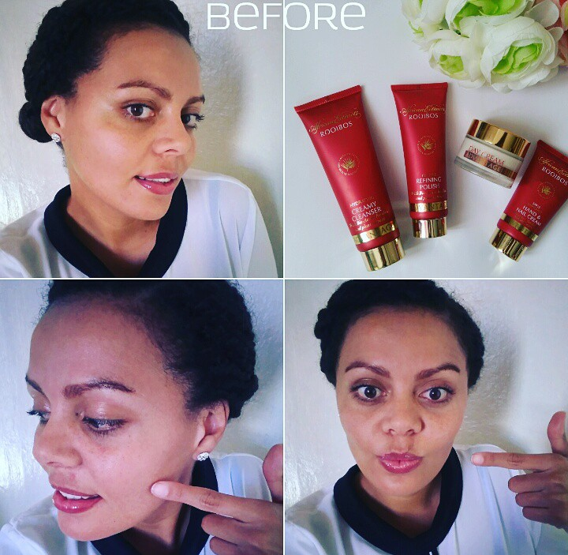

Price75ml R65
Unlimited Stork Avalaible.
This creamy facial scrub gently lifts oil, dirt and exfoliates dry skin cells to unclog and refine the appearance of pores and visibly improve skin texture. With Bio-Active Rooibos and Buchu leaf extract, Vitamin B3 and salicylic acid to leave skin soothed and feeling smoother with a matte, oil-free finish. For best results use 3 to 4 times a week